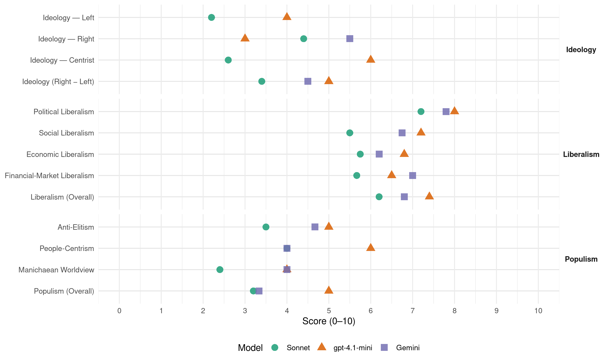

ADR (Luxembourg, 2009)
manifesto_id 23951_200906
Get full text: This site shows derived annotations and short verbatim quotes only. The full manifesto text is © Manifesto Project / WZB — obtain it via manifesto-project.wzb.eu using the manifesto_id above.
Headline scores
| Dimension | Sonnet | gpt-4.1-mini | Gemini |
|---|---|---|---|
| Populism (Overall) | 3.2 | 5.0 | 3.3 |
| Anti-Elitism | 3.5 | 5.0 | 4.7 |
| People-Centrism | 4.0 | 6.0 | 4.0 |
| Manichaean Worldview | 2.4 | 4.0 | 4.0 |
| Ideology (Right − Left) | 3.4 | 5.0 | 4.5 |
| Liberalism (Overall) | 6.2 | 7.4 | 6.8 |
| Political Liberalism | 7.2 | 8.0 | 7.8 |
| Social Liberalism | 5.5 | 7.2 | 6.8 |
| Economic Liberalism | 5.8 | 6.8 | 6.2 |
| Financial-Market Liberalism | 5.7 | 6.5 | 7.0 |
Evidence per dimension
Economic Liberalism
Gemini · score 8.0 · verified · chunk 1
“nachhaltigen, sozialen und oekologischen Marktwirtschaft”
Sie bestätigt jedoch den Wert einer nachhaltigen, sozialen und oekologischen Marktwirtschaft: Arbeit, Kapital und Nachhaltigkeit gehören zusammen.
Gemini · score 8.0 · verified · chunk 2
“Bedingungen der freien Marktwirtschaft”
Dieses ist unter den Bedingungen der freien Marktwirtschaft – zu der die ADR sich bekennt – hauptsächlich über die Steigerung des Angebots zu erreichen.
Gemini · score 8.0 · verified · chunk 3
“Betriebe brauchen eine einfache, wirtschaftlich gerechte Steuergesetzgebung”
Mittelstand und europäische Institutionen. Jeder dieser Pfeiler fordert eine spezifische Analyse und eine spezifische Politik. Betriebe brauchen eine einfache, wirtschaftlich gerechte Steuergesetzgebung sowie, zurzeit, eine im internationalen Vergleich konkurrenzfähige
Gemini · score 4.0 · verified · chunk 4
“unlauteren Wettbewerb, der darin besteht”
rentabel arbeitenden Weinbaus einsetzen. Sie will den unlauteren Wettbewerb, der darin besteht, dass Weine aus aller Welt bei uns billig
Gemini · score 3.0 · verified · chunk 5
“unlauteren Wettbewerb, der darin besteht, dass Weine aus aller Welt bei uns billig verkauft werden”
Sie will den unlauteren Wettbewerb, der darin besteht, dass Weine aus aller Welt bei uns billig verkauft werden können, ohne dass entsprechende soziale, ökologische und önologische Auflagen bestehen, mit allen zur Verfügung stehenden Mitteln bekämpfen.
gpt-4.1-mini · score 7.0 · verified · chunk 1
“Die ADR wird gezielt die PME fördern”
Die PME beschäftigen 60,5 % der Mitarbeiter im Privatsektor. Ihre Entwicklung, die heute durch zahlreiche Hürden eingeschränkt wird, ist maßgebend für das Wirtschaftswachstum. Die ADR wird gezielt die PME fördern.
gpt-4.1-mini · score 8.0 · verified · chunk 2
“Die ADR möchte, dass alle Menschen die in Luxemburg arbeiten und dort ihr Leben bzw. das ihrer Familie gestalten möchten, ein Recht auf eine angemessene Wohnung haben, ohne dass sie dazu ins benachbarte Ausland umziehen müssen.”
Die ADR möchte, dass alle Menschen die in Luxemburg arbeiten und dort ihr Leben bzw. das ihrer Familie gestalten möchten, ein Recht auf eine angemessene Wohnung haben, ohne dass sie dazu ins benachbarte Ausland umziehen müssen. Damit auch junge Leute und junge Familien sich eine Wohnung leisten können, muss der Staat alle in seinem Zuständigkeitsbereich liegenden Maßnahmen treffen, um den Zugang zu erschwinglichem Baugrund zu gewährleisten.
gpt-4.1-mini · score 7.0 · verified · chunk 3
“Die Betriebsbesteuerung so ausgelegt, dass sie die Rentabilität und das Überleben der Betriebe garantiert”
Mit der ADR wird die Betriebsbesteuerung so ausgelegt, dass sie die Rentabilität und das Überleben der Betriebe garantiert. So muss z.B. für mittelständische Unternehmen deren Kapitalisierung und die Bildung von Rückstellungen gefördert werden.
gpt-4.1-mini · score 6.0 · verified · chunk 4
“Die ADR will die Landwirtschaft in die Lage versetzen, sich als zukunftsträchtiger Wirtschaftszweig optimal zu entwickeln”
Die ADR will die Landwirtschaft in die Lage versetzen, sich als zukunftsträchtiger Wirtschaftszweig optimal zu entwickeln. Die einkommens-und sozialpolitische Lage der Agrarbevölkerung ist durch geeignete Maßnahmen soweit zu verbessern, dass die bedauerliche Abwanderung aus der Landwirtschaft und das damit verbundene Betriebssterben weitgehend gestoppt werden kann.
gpt-4.1-mini · score 6.0 · verified · chunk 5
“Die bisher praktizierte staatliche Förderung sinnloser und kontraproduktiver Projekte muss gestoppt werden”
Wir werden daher die notwendigen Schritte einleiten, um das Genossenschaftswesen moderner, transparenter -und leistungsfähiger zu gestalten. Die bisher praktizierte staatliche Förderung sinnloser und kontraproduktiver Projekte muss gestoppt werden.
Sonnet · score 6.0 · verified · chunk 1
“Keine Steuererhöhungen, die die Wettbewerbsfähigkeit beinträchtigen”
1) Keine Steuererhöhungen, die die Wettbewerbsfähigkeit beinträchtigen. Die Wettbewerbsfähigkeit der in Luxemburg angesiedelten Unternehmen darf nicht durch Steuererhöhungen untergraben werden.
Sonnet · score 7.0 · verified · chunk 2
“freien Markwirtschaft – zu der die ADR sich bekennt”
Dieses ist unter den Bedingungen der freien Markwirtschaft – zu der die ADR sich bekennt – hauptsächlich über die Steigerung des Angebots zu erreichen.
Sonnet · score 6.0 · verified · chunk 4
“Nachhaltigkeit im Wirtschaften sollte deshalb nicht als Hemmschuh”
Nachhaltigkeit im Wirtschaften sollte deshalb nicht als Hemmschuh, sondern als Chance für neue Technologien und Aufschwung der Wirtschaft angesehen werden.
Sonnet · score 4.0 · verified · chunk 5
“unlauteren Wettbewerb, der darin besteht, dass Weine”
Sie will den unlauteren Wettbewerb, der darin besteht, dass Weine aus aller Welt bei uns billig verkauft werden können, ohne dass entsprechende soziale, ökologische und önologische Auflagen bestehen
Financial-Market Liberalism
Gemini · score 7.0 · verified · chunk 1
“Finanzmarkt braucht mehr Verbraucherschutz”
Der Finanzmarkt braucht mehr Verbraucherschutz. Banker sollten nicht für Umsatz bezahlt werden sondern für Kundenzufriedenheit.
gpt-4.1-mini · score 6.0 · verified · chunk 1
“Die ADR wird dafür sorgen, dass unsere bestehenden Produkte, wie Familienholding oder Risikokapitalinvestitionsgesellschaften sowie die Gesellschaftsform der „anonymen Gesellschaft“ mittels Inhaberaktien beibehalten und geschützt werden”
Die ADR wird dafür sorgen, dass unsere bestehenden Produkte, wie Familienholding oder Risikokapitalinvestitionsgesellschaften sowie die Gesellschaftsform der „anonymen Gesellschaft“ mittels Inhaberaktien beibehalten und geschützt werden. Darüber hinaus verlangt der internationale Markt nach neuen, noch besseren Instrumenten.
gpt-4.1-mini · score 7.0 · verified · chunk 3
“Der ADR setzt sich für eine Reform der staatlichen Institutionen ein, die Finanzkontrolle und die öffentlichen Ausschreibungen müssen stark vereinfacht werden”
Die Finanzkontrolle und die öffentlichen Ausschreibungen müssen stark vereinfacht werden um die Effizienz der staatlichen Verwaltungen zu erhöhen, ohne dabei aber an Qualität einzubüßen.
Sonnet · score 5.0 · mixed · chunk 1
“Finanzmarkt braucht mehr Verbraucherschutz”
Die Banken müssen mit einem deutlich höheren Anteil an Eigenkapital arbeiten um ihr Risikobewusstsein zu schärfen. Der Finanzmarkt braucht mehr Verbraucherschutz.
Sonnet · score 6.0 · verified · chunk 2
“auch hier regelt der Markt über Angebot und Nachfrage den Preis”
Es sollte per Gesetz weder Minimal-noch Maximalmieten geben: auch hier regelt der Markt über Angebot und Nachfrage den Preis!
Sonnet · score 6.0 · verified · chunk 3
“Bankplatz, Industrie, Mittelstand und europäische Institutionen”
Die wirtschaftliche Struktur unseres Landes soll sich weiter auf vier Pfeiler stützen: Bankplatz, Industrie, Mittelstand und europäische Institutionen.
Sonnet · score 5.0 · verified · chunk 4
“Souveränität Luxemburgs in Steuerfragen steht nicht zur Disposition”
Die Souveränität Luxemburgs in Steuerfragen steht nicht zur Disposition. Luxemburg muss stets gleichrangig mit allen anderen Mitgliedsstaaten in jeder einzelnen Institution der Union vertreten sein.
Political Liberalism
Gemini · score 8.0 · verified · chunk 1
“De Rechtsstat stäerken”
19) De Rechtsstat stäerken! ……………………………………………………………………………………………………………. 53
Gemini · score 8.0 · verified · chunk 2
“Säulen des demokratischen und liberalen Rechtsstaats”
Sorge sieht die ADR, dass in den letzten Jahren immer mehr dieser traditionellen Säulen des demokratischen und liberalen Rechtsstaats ungebührlich geschwächt worden sind.
Gemini · score 9.0 · verified · chunk 3
“schützt die Freiheit des Einzelnen, sie fördert eine lebendige Demokratie”
studieren. 19) De Rechtsstat stäerken! Die ADR schützt die Freiheit des Einzelnen, sie fördert eine lebendige Demokratie und setzt sich für einen starken Rechtstaat ein. Sie
Gemini · score 8.0 · verified · chunk 4
“Interesse der Gewaltentrennung im Rechtsstaat”
polizeilichen Ermittlungsarbeit auf Anfrage eines Magistraten. Im Interesse der Gewaltentrennung im Rechtsstaat sollen der Polizei jedoch keine quasi-gerichtlichen Kompetenzen
Gemini · score 6.0 · verified · chunk 5
“der Tierschutz ist endlich in der Verfassung verankert worden”
Die ADR begrüßt daher dass ihre Forderung während der letzten Legislative erfüllt worden ist: der Tierschutz ist endlich in der Verfassung verankert worden (Art. 11 Bis).
gpt-4.1-mini · score 7.0 · verified · chunk 1
“Wir stehen in für eine wirklich Demokratie”
Die ADR gibt damit ihrem Anspruch als Alternative Demokratische Reformpartei gerecht. Wir stehen in für eine wirklich Demokratie. Wir wollen das Land mit Reformen zukunftsfähig machen.
gpt-4.1-mini · score 9.0 · verified · chunk 2
“Die ADR schützt die Freiheit des Einzelnen, sie fördert eine lebendige Demokratie und setzt sich für einen starken Rechtstaat ein.”
Die ADR schützt die Freiheit des Einzelnen, sie fördert eine lebendige Demokratie und setzt sich für einen starken Rechtstaat ein. Sie engagiert sich für eine politische Kultur der Ehrlichkeit, der Toleranz und der Offenheit.
gpt-4.1-mini · score 9.0 · verified · chunk 3
“Die ADR schützt die Freiheit des Einzelnen, sie fördert eine lebendige Demokratie und setzt sich für einen starken Rechtstaat ein”
studieren. 19) De Rechtsstat stäerken! Die ADR schützt die Freiheit des Einzelnen, sie fördert eine lebendige Demokratie und setzt sich für einen starken Rechtstaat ein. Sie engagiert sich für eine politische Kultur der Ehrlichkeit, der Toleranz und der Offenheit.
gpt-4.1-mini · score 8.0 · verified · chunk 4
“Im Sinne der Religionsfreiheit respektiert die ADR die religiösen und philosophischen Überzeugungen aller Bürger”
Im Sinne der Religionsfreiheit respektiert die ADR die religiösen und philosophischen Überzeugungen aller Bürger, sofern diese nicht rechtstaatlichen Prinzipien zuwiderlaufen. Sie schätzt den spirituellen, kulturellen und sozialen Beitrag der Kirchen und religiösen Gemeinschaften zum Gemeinwesen.
gpt-4.1-mini · score 7.0 · verified · chunk 5
“der Tierschutz ist endlich in der Verfassung verankert worden (Art. 11 Bis)”
Die ADR begrüßt daher dass ihre Forderung während der letzten Legislative erfüllt worden ist: der Tierschutz ist endlich in der Verfassung verankert worden (Art. 11 Bis). Als logische und rechtliche Konsequenz müssen nun eine Reihe Gesetze angepasst werden.
Sonnet · score 7.0 · verified · chunk 1
“Stärkung der Autonomie des Rechnungshofes”
Diese Kontrolle wollen wir durch eine Ausweitung der Aufgaben und eine Stärkung der Autonomie des Rechnungshofes erreichen.
Sonnet · score 8.0 · verified · chunk 2
“Pressefreiheit, die Unschuldsvermutung vor Gericht”
die unbedingte Achtung der Menschenrechte, der Respekt der Privatsphäre durch den Staat, der Datenschutz, die Pressefreiheit, die Unschuldsvermutung vor Gericht, die Verhältnismäßigkeit des staatlichen Handelns
Sonnet · score 8.0 · verified · chunk 3
“lebendige Demokratie und setzt sich für einen starken Rechtstaat”
Die ADR schützt die Freiheit des Einzelnen, sie fördert eine lebendige Demokratie und setzt sich für einen starken Rechtstaat ein.
Sonnet · score 7.0 · verified · chunk 4
“Stärkung der Menschenrechte, der Vorrang des Völkerrechts”
Grundprinzipien der Außenpolitik bleiben die Stärkung der Menschenrechte, der Vorrang des Völkerrechts und die Solidarität mit den ärmeren Staaten.
Sonnet · score 6.0 · verified · chunk 5
“Tierschutz ist endlich in der Verfassung verankert worden”
der Tierschutz ist endlich in der Verfassung verankert worden (Art. 11 Bis). Als logische und rechtliche Konsequenz müssen nun eine Reihe Gesetze angepasst werden.
Liberalism (Overall)
Gemini · score 8.0 · verified · chunk 1
“nachhaltigen, sozialen und oekologischen Marktwirtschaft”
Sie bestätigt jedoch den Wert einer nachhaltigen, sozialen und oekologischen Marktwirtschaft: Arbeit, Kapital und Nachhaltigkeit gehören zusammen.
Gemini · score 7.0 · verified · chunk 2
“Säulen des demokratischen und liberalen Rechtsstaats”
Sorge sieht die ADR, dass in den letzten Jahren immer mehr dieser traditionellen Säulen des demokratischen und liberalen Rechtsstaats ungebührlich geschwächt worden sind.
Gemini · score 8.0 · verified · chunk 3
“schützt die Freiheit des Einzelnen, sie fördert eine lebendige Demokratie”
studieren. 19) De Rechtsstat stäerken! Die ADR schützt die Freiheit des Einzelnen, sie fördert eine lebendige Demokratie und setzt sich für einen starken Rechtstaat ein. Sie
Gemini · score 6.0 · verified · chunk 4
“Interesse der Gewaltentrennung im Rechtsstaat”
polizeilichen Ermittlungsarbeit auf Anfrage eines Magistraten. Im Interesse der Gewaltentrennung im Rechtsstaat sollen der Polizei jedoch keine quasi-gerichtlichen Kompetenzen
Gemini · score 5.0 · verified · chunk 5
“der Tierschutz ist endlich in der Verfassung verankert worden”
Die ADR begrüßt daher dass ihre Forderung während der letzten Legislative erfüllt worden ist: der Tierschutz ist endlich in der Verfassung verankert worden (Art. 11 Bis).
gpt-4.1-mini · score 7.0 · verified · chunk 1
“Die ADR wird gezielt die PME fördern”
Die PME beschäftigen 60,5 % der Mitarbeiter im Privatsektor. Ihre Entwicklung, die heute durch zahlreiche Hürden eingeschränkt wird, ist maßgebend für das Wirtschaftswachstum. Die ADR wird gezielt die PME fördern.
gpt-4.1-mini · score 8.0 · verified · chunk 2
“Die ADR schützt die Freiheit des Einzelnen, sie fördert eine lebendige Demokratie und setzt sich für einen starken Rechtstaat ein.”
Die ADR schützt die Freiheit des Einzelnen, sie fördert eine lebendige Demokratie und setzt sich für einen starken Rechtstaat ein. Sie engagiert sich für eine politische Kultur der Ehrlichkeit, der Toleranz und der Offenheit.
gpt-4.1-mini · score 8.0 · verified · chunk 3
“Die ADR schützt die Freiheit des Einzelnen, sie fördert eine lebendige Demokratie und setzt sich für einen starken Rechtstaat ein”
studieren. 19) De Rechtsstat stäerken! Die ADR schützt die Freiheit des Einzelnen, sie fördert eine lebendige Demokratie und setzt sich für einen starken Rechtstaat ein. Sie engagiert sich für eine politische Kultur der Ehrlichkeit, der Toleranz und der Offenheit.
gpt-4.1-mini · score 7.0 · verified · chunk 4
“Im Sinne der Religionsfreiheit respektiert die ADR die religiösen und philosophischen Überzeugungen aller Bürger”
Im Sinne der Religionsfreiheit respektiert die ADR die religiösen und philosophischen Überzeugungen aller Bürger, sofern diese nicht rechtstaatlichen Prinzipien zuwiderlaufen. Sie schätzt den spirituellen, kulturellen und sozialen Beitrag der Kirchen und religiösen Gemeinschaften zum Gemeinwesen.
gpt-4.1-mini · score 7.0 · verified · chunk 5
“der Tierschutz ist endlich in der Verfassung verankert worden (Art. 11 Bis)”
Die ADR begrüßt daher dass ihre Forderung während der letzten Legislative erfüllt worden ist: der Tierschutz ist endlich in der Verfassung verankert worden (Art. 11 Bis). Als logische und rechtliche Konsequenz müssen nun eine Reihe Gesetze angepasst werden.
Sonnet · score 6.0 · verified · chunk 1
“starken Staat, der dem Markt Regeln setzt”
Für die ADR steht fest: es braucht einen starken Staat, der dem Markt Regeln setzt und für ihre Durchsetzung sorgt. Denn Marktwirtschaft lebt vom Wettbewerb und von der Begrenzung wirtschaftlicher Macht.
Sonnet · score 7.0 · verified · chunk 2
“lebendige Demokratie und setzt sich für einen starken Rechtstaat ein”
Die ADR schützt die Freiheit des Einzelnen, sie fördert eine lebendige Demokratie und setzt sich für einen starken Rechtstaat ein.
Sonnet · score 7.0 · verified · chunk 3
“lebendige Demokratie und setzt sich für einen starken Rechtstaat”
Die ADR schützt die Freiheit des Einzelnen, sie fördert eine lebendige Demokratie und setzt sich für einen starken Rechtstaat ein.
Sonnet · score 6.0 · verified · chunk 4
“Stärkung der Menschenrechte, der Vorrang des Völkerrechts”
Grundprinzipien der Außenpolitik bleiben die Stärkung der Menschenrechte, der Vorrang des Völkerrechts und die Solidarität mit den ärmeren Staaten.
Sonnet · score 5.0 · verified · chunk 5
“Tierschutz ist endlich in der Verfassung verankert worden”
der Tierschutz ist endlich in der Verfassung verankert worden (Art. 11 Bis). Als logische und rechtliche Konsequenz müssen nun eine Reihe Gesetze angepasst werden.
Anti-Elitism
Gemini · score 6.0 · verified · chunk 1
“schamlose Vergeudung von Steuergeldern”
Die bisher von den vorhergehenden Regierungen praktizierte schamlose Vergeudung von Steuergeldern muss aufhören.
Gemini · score 4.0 · verified · chunk 3
“politische Vetternwirtschaft, wie sie von den bisherigen Regierungsparteien”
erhofft sich, dass durch diese Maßnahme die politische Vetternwirtschaft, wie sie von den bisherigen Regierungsparteien schon fast selbstverständlich betrieben wird, zurückgedrängt
Gemini · score 4.0 · verified · chunk 5
“bisher, mangels klar definierter Kriterien oftmals zutage tretende administrative Willkür”
Für Aussiedlungsprojekte landwirtschaftlicher Betriebe müssen objektive, vernünftige und nachvollziehbare Regeln geschaffen werden. Die bisher, mangels klar definierter Kriterien oftmals zutage tretende administrative Willkür ist nicht weiter hinnehmbar.
gpt-4.1-mini · score 5.0 · verified · chunk 1
“Die bisher von den vorhergehenden Regierungen praktizierte schamlose Vergeudung von Steuergeldern muss aufhören”
Die ADR wird der Krise daher auf mehreren Ebenen begegnen: Die bisher von den vorhergehenden Regierungen praktizierte schamlose Vergeudung von Steuergeldern muss aufhören. Dazu bedarf es grundlegender Reformen in der öffentlichen Ausgabenpraxis.
Sonnet · score 5.0 · mixed · chunk 1
“schamlose Vergeudung von Steuergeldern”
Die bisher von den vorhergehenden Regierungen praktizierte schamlose Vergeudung von Steuergeldern muss aufhören.
Sonnet · score 4.0 · verified · chunk 2
“Erziehungsdiktatur des Staates hinaus”
In der Praxis läuft es aber zusehends auf eine Erziehungsdiktatur des Staates hinaus. Für die ADR ist die Freiheit eine der Grundbedingungen
Sonnet · score 3.0 · verified · chunk 3
“politische Vetternwirtschaft, wie sie von den bisherigen Regierungsparteien”
Die ADR erhofft sich, dass durch diese Maßnahme die politische Vetternwirtschaft, wie sie von den bisherigen Regierungsparteien schon fast selbstverständlich betrieben wird, zurückgedrängt wird.
Sonnet · score 3.0 · verified · chunk 4
“europäische Agrarpolitik hat auf manchen Gebieten”
Vor allem die europäische Agrarpolitik hat auf manchen Gebieten zu Formen der Massentierhaltung geführt, die nicht als artgerecht angesehen werden können.
Sonnet · score 4.0 · verified · chunk 5
“großen Konzernen angestrebt werden, zu verbieten”
Genompatente auf Lebewesen, wie Pflanzen und Tieren, wie sie von großen Konzernen angestrebt werden, zu verbieten.
Ideology — Centrist
gpt-4.1-mini · score 6.0 · verified · chunk 1
“Wir stehen in für eine wirklich Demokratie”
Die ADR gibt damit ihrem Anspruch als Alternative Demokratische Reformpartei gerecht. Wir stehen in für eine wirklich Demokratie. Wir wollen das Land mit Reformen zukunftsfähig machen.
Sonnet · score 4.0 · verified · chunk 1
“Alternativ Demokratesch Reformpartei”
D’ADR gëtt domatt hirem Usproch als Alternativ Demokratesch Reformpartei gerecht. Mir hu konkret Alternativen.
Sonnet · score 3.0 · verified · chunk 2
“pragmatische und gerechte Politik der Chancengleichheit ohne jegliche Ideologie”
Die ADR steht für eine pragmatische und gerechte Politik der Chancengleichheit ohne jegliche Ideologie.
Sonnet · score 2.0 · verified · chunk 3
“fairen politischen Wettbewerb aus”
Die ADR spricht sich für einen fairen politischen Wettbewerb aus und lehnt daher jede Art von Quoten oder andere Einschränkungen des freien Wählerwillens ab.
Sonnet · score 2.0 · verified · chunk 4
“glaubwürdige und realistische Außenpolitik betreiben”
Sie wird eine glaubwürdige und realistische Außenpolitik betreiben, im steten Bewusstsein um die bescheidenen Möglichkeiten Luxemburgs.
Sonnet · score 2.0 · verified · chunk 5
“administrative Willkür ist nicht weiter hinnehmbar”
Die bisher, mangels klar definierter Kriterien oftmals zutage tretende administrative Willkür ist nicht weiter hinnehmbar.
Ideology — Left
gpt-4.1-mini · score 4.0 · verified · chunk 1
“soziale Marktwirtschaft und soziale Gerechtigkeit”
Für die ADR bedeuten soziale Marktwirtschaft und soziale Gerechtigkeit, dass die Bürger aus ihrer Arbeit oder ihrem Recht auf Rente ein Einkommen erhalten, das einen angemessenen Lebensstandard erlaubt.
Sonnet · score 3.0 · verified · chunk 1
“soziale Kohäsion zu sorgen”
Für die ADR gilt als erstes Gebot für soziale Kohäsion zu sorgen und die Kaufkraft so zu erhalten, dass nicht auch noch der nationale Markt zusammenbricht.
Sonnet · score 2.0 · verified · chunk 2
“soziale Gerechtigkeit und Chancengleichheit”
soziale Gerechtigkeit und Chancengleichheit. Jede Verbesserung der Gesundheit kann nur von einer solchen Basis aus erreicht werden
Sonnet · score 1.0 · verified · chunk 3
“sozialgerechte und familienfreundliche Steuern”
Die ADR will eine Steuerpolitik die auf folgenden Prinzipien beruht: niedrige Steuern damit Arbeit und Leistung sich lohnt, sozialgerechte und familienfreundliche Steuern durch zusätzliche Steuerkredite und Negativsteuer.
Sonnet · score 2.0 · verified · chunk 4
“soziale Sicherung der Bauern-Winzer-und Gärtnerfamilien verbessern”
Die ADR will die soziale Sicherung der Bauern-Winzer-und Gärtnerfamilien verbessern, im Krankheitsfall, bei beruflichen Unfällen, im Alter
Sonnet · score 3.0 · verified · chunk 5
“soziale Sicherung der Bauern-Winzer-und Gärtnerfamilien verbessern”
Die ADR will die soziale Sicherung der Bauern-Winzer-und Gärtnerfamilien verbessern, im Krankheitsfall, bei beruflichen Unfällen, im Alter
Ideology (Right − Left)
Gemini · score 5.0 · verified · chunk 1
“ENG Sprooch, déi all Bierger verbënnt”
24) ENG Sprooch, déi all Bierger verbënnt! ……………………………………………………………………… 71
Gemini · score 4.0 · verified · chunk 3
“Sprache als Nationalsprache der Luxemburger in der Verfassung”
verfassungsrechtlichen Prioritäten umfassend darlegen. Sie setzt sich dafür ein, dass der Rang und die besondere Rolle der luxemburgischen Sprache als Nationalsprache der Luxemburger in der Verfassung verankert werden. Ein besonderer Artikel soll den
gpt-4.1-mini · score 5.0 · verified · chunk 1
“Die ADR gibt damit ihrem Anspruch als Alternative Demokratische Reformpartei gerecht”
Die ADR gibt damit ihrem Anspruch als Alternative Demokratische Reformpartei gerecht. Wir stehen in für eine wirklich Demokratie. Wir wollen das Land mit Reformen zukunftsfähig machen.
Sonnet · score 3.0 · verified · chunk 1
“nachhaltigen, sozialen und oekologischen Marktwirtschaft”
Sie bestätigt jedoch den Wert einer nachhaltigen, sozialen und oekologischen Marktwirtschaft: Arbeit, Kapital und Nachhaltigkeit gehören zusammen.
Sonnet · score 4.0 · verified · chunk 2
“traditionelle Familienmodell”
Daher verdient auch das besonders schützenswerte traditionelle Familienmodell, bei dem einer der beiden Partner sich teilweise oder ganz der Erziehung der Kinder widmet
Sonnet · score 3.0 · verified · chunk 3
“Luxemburger Sprache DAS Mittel ist, um die Integration”
Die ADR ist prinzipiell der Auffassung, dass die Luxemburger Sprache DAS Mittel ist, um die Integration und die soziale Kohäsion zu fördern.
Sonnet · score 4.0 · verified · chunk 4
“Einwanderungs-und Integrationspolitik im Respekt der Luxemburger Identität”
Grundsätzlich steht die ADR für eine Einwanderungs-und Integrationspolitik im Respekt der Luxemburger Identität.
Sonnet · score 3.0 · verified · chunk 5
“Jagd gehört zu unseren Traditionen und unserem Kulturgut”
Die Jagd gehört zu unseren Traditionen und unserem Kulturgut und stellt im ländlichen Raum auch einen nicht zu unterschätzender Wirtschaftsfaktor dar.
Ideology — Right
Gemini · score 6.0 · verified · chunk 1
“ENG Sprooch, déi all Bierger verbënnt”
24) ENG Sprooch, déi all Bierger verbënnt! ……………………………………………………………………… 71
Gemini · score 5.0 · verified · chunk 3
“Sprache als Nationalsprache der Luxemburger in der Verfassung”
verfassungsrechtlichen Prioritäten umfassend darlegen. Sie setzt sich dafür ein, dass der Rang und die besondere Rolle der luxemburgischen Sprache als Nationalsprache der Luxemburger in der Verfassung verankert werden. Ein besonderer Artikel soll den
gpt-4.1-mini · score 3.0 · verified · chunk 1
“Luxemburg muss helfen, den internationalen Finanzmärkten eine neue Ordnung zu geben”
Luxemburg muss helfen, den internationalen Finanzmärkten eine neue Ordnung zu geben. Grundsätzliche Orientierungen hierfür sollten sein: Die Banken müssen mit einem deutlich höheren Anteil an Eigenkapital arbeiten um ihr Risikobewusstsein zu schärfen.
Sonnet · score 4.0 · verified · chunk 1
“soziales Dumping zu verhindern”
Die ADR wird die Kontrollen auf Baustellen verstärken um ausländische Betriebe zu zwingen, unsere gesetzlichen und kollektivvertraglichen Bestimmungen genauestens zu respektieren und soziales Dumping zu verhindern.
Sonnet · score 5.0 · verified · chunk 2
“traditionelle Familienmodell”
Daher verdient auch das besonders schützenswerte traditionelle Familienmodell, bei dem einer der beiden Partner sich teilweise oder ganz der Erziehung der Kinder widmet
Sonnet · score 4.0 · verified · chunk 3
“Luxemburger Sprache DAS Mittel ist, um die Integration”
Die ADR ist prinzipiell der Auffassung, dass die Luxemburger Sprache DAS Mittel ist, um die Integration und die soziale Kohäsion zu fördern.
Sonnet · score 5.0 · verified · chunk 4
“Einwanderungs-und Integrationspolitik im Respekt der Luxemburger Identität”
Grundsätzlich steht die ADR für eine Einwanderungs-und Integrationspolitik im Respekt der Luxemburger Identität.
Sonnet · score 4.0 · verified · chunk 5
“Jagd gehört zu unseren Traditionen und unserem Kulturgut”
Die Jagd gehört zu unseren Traditionen und unserem Kulturgut und stellt im ländlichen Raum auch einen nicht zu unterschätzender Wirtschaftsfaktor dar.
Manichaean Worldview
Gemini · score 4.0 · verified · chunk 1
“Druck missgünstiger Staaten in der EU”
Luxemburg muss eine Strategie entwickeln, wie es sich dem Druck missgünstiger Staaten in der EU bzw. OCDE erfolgreich widersetzen
gpt-4.1-mini · score 4.0 · verified · chunk 1
“Die Finanzkrise stiftet Unsicherheit und lähmt weltweit den Unternehmungsgeist”
Die Finanzkrise stiftet Unsicherheit und lähmt weltweit den Unternehmungsgeist. Sie bestätigt jedoch den Wert einer nachhaltigen, sozialen und oekologischen Marktwirtschaft: Arbeit, Kapital und Nachhaltigkeit gehören zusammen.
Sonnet · score 3.0 · verified · chunk 1
“maßlose Verschwendungspolitik kommt unser Land”
Die ADR bedauert, dass die vorangegangenen Regierungen diesen vorsorglichen Umgang mit den Steuergeldern nicht gepflegt haben; die maßlose Verschwendungspolitik kommt unser Land nun doppelt teuer zu stehen.
Sonnet · score 2.0 · verified · chunk 2
“traditionellen Säulen des demokratischen und liberalen Rechtsstaats ungebührlich geschwächt”
Mit großer Sorge sieht die ADR, dass in den letzten Jahren immer mehr dieser traditionellen Säulen des demokratischen und liberalen Rechtsstaats ungebührlich geschwächt worden sind.
Sonnet · score 2.0 · verified · chunk 3
“Erziehungsdiktatur des Staates”
In der Praxis läuft es aber zusehends auf eine Erziehungsdiktatur des Staates hinaus.
Sonnet · score 2.0 · verified · chunk 4
“Luxemburger dürfen nicht zu Bürgern zweiter Klasse”
Es darf aber nicht sein, wie verschiedene Ausländerorganisation dies fordern, dass spezielle Hilfen oder Kriterien bei Ausländern angewendet werden: Luxemburger dürfen nicht zu Bürgern zweiter Klasse in ihrem eigenen Land werden!
Sonnet · score 3.0 · verified · chunk 5
“staatliche Förderung sinnloser und kontraproduktiver Projekte”
Die bisher praktizierte staatliche Förderung sinnloser und kontraproduktiver Projekte muss gestoppt werden.
People-Centrism
Gemini · score 5.0 · verified · chunk 1
“ENG Sprooch, déi all Bierger verbënnt”
24) ENG Sprooch, déi all Bierger verbënnt! ……………………………………………………………………… 71
Gemini · score 3.0 · verified · chunk 3
“Nicht der Staat muss den Bürger, sondern der Bürger”
anlehnen. Die „Agents municipaux“ müssen dann auch eine Initialausbildung erhalten, sowie an regelmäßigen Fortbildungskursen teilnehmen. Nicht der Staat muss den Bürger, sondern der Bürger den Staat kontrollieren können. Jeder Bürger soll das Recht
gpt-4.1-mini · score 6.0 · verified · chunk 1
“Der Bürger als Kunde”
Eine effiziente Organisation. Der Bürger als Kunde. 6621) Fir e verstännegen Ëmgank mat de Steiergelder!
Sonnet · score 4.0 · verified · chunk 1
“Mir bleiwe mat de Féiss um Buedem”
Dat si Schwéierpunkter, déi mir setze wëllen, ouni d’Land iwer d’Mooss an d’Verschëldung ze dreiwen. Mir bleiwe mat de Féiss um Buedem!
Sonnet · score 4.0 · verified · chunk 4
“Schutz der Bürger vor kriminellen Übergriffen”
Der Schutz der Bürger vor kriminellen Übergriffen gehört zu den Kernaufgaben eines Staates.
Sonnet · score 4.0 · verified · chunk 5
“die Bauern, Gärtner und Winzer hierfür einen Ausgleich erhalten”
Wenn mit Lebensmittelpreisen, die nicht kostendeckend sind, Wirtschafts-und Sozialpolitik gemacht wird, müssen die Bauern, Gärtner und Winzer hierfür einen Ausgleich erhalten
Populism (Overall)
Gemini · score 5.0 · verified · chunk 1
“schamlose Vergeudung von Steuergeldern”
Die bisher von den vorhergehenden Regierungen praktizierte schamlose Vergeudung von Steuergeldern muss aufhören.
Gemini · score 3.0 · verified · chunk 3
“politische Vetternwirtschaft, wie sie von den bisherigen Regierungsparteien”
erhofft sich, dass durch diese Maßnahme die politische Vetternwirtschaft, wie sie von den bisherigen Regierungsparteien schon fast selbstverständlich betrieben wird, zurückgedrängt
Gemini · score 2.0 · verified · chunk 5
“bisher, mangels klar definierter Kriterien oftmals zutage tretende administrative Willkür”
Für Aussiedlungsprojekte landwirtschaftlicher Betriebe müssen objektive, vernünftige und nachvollziehbare Regeln geschaffen werden. Die bisher, mangels klar definierter Kriterien oftmals zutage tretende administrative Willkür ist nicht weiter hinnehmbar.
gpt-4.1-mini · score 5.0 · verified · chunk 1
“Die bisher von den vorhergehenden Regierungen praktizierte schamlose Vergeudung von Steuergeldern muss aufhören”
Die ADR wird der Krise daher auf mehreren Ebenen begegnen: Die bisher von den vorhergehenden Regierungen praktizierte schamlose Vergeudung von Steuergeldern muss aufhören. Dazu bedarf es grundlegender Reformen in der öffentlichen Ausgabenpraxis.
Sonnet · score 4.0 · verified · chunk 1
“schamlose Vergeudung von Steuergeldern”
Die bisher von den vorhergehenden Regierungen praktizierte schamlose Vergeudung von Steuergeldern muss aufhören.
Sonnet · score 3.0 · verified · chunk 2
“Erziehungsdiktatur des Staates hinaus”
In der Praxis läuft es aber zusehends auf eine Erziehungsdiktatur des Staates hinaus.
Sonnet · score 3.0 · verified · chunk 3
“politische Vetternwirtschaft, wie sie von den bisherigen Regierungsparteien”
Die ADR erhofft sich, dass durch diese Maßnahme die politische Vetternwirtschaft, wie sie von den bisherigen Regierungsparteien schon fast selbstverständlich betrieben wird, zurückgedrängt wird.
Sonnet · score 3.0 · verified · chunk 4
“Luxemburger dürfen nicht zu Bürgern zweiter Klasse”
Es darf aber nicht sein, wie verschiedene Ausländerorganisation dies fordern, dass spezielle Hilfen oder Kriterien bei Ausländern angewendet werden: Luxemburger dürfen nicht zu Bürgern zweiter Klasse in ihrem eigenen Land werden!
Sonnet · score 3.0 · verified · chunk 5
“großen Konzernen angestrebt werden, zu verbieten”
Genompatente auf Lebewesen, wie Pflanzen und Tieren, wie sie von großen Konzernen angestrebt werden, zu verbieten.
Social Liberalism